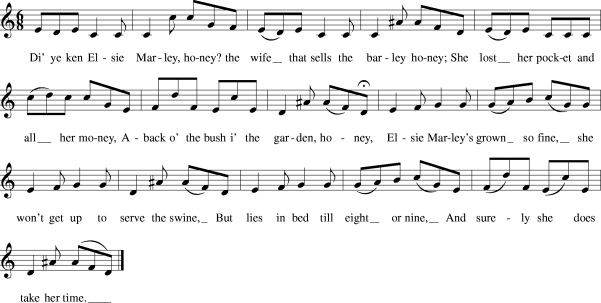

Eppie Marly
An Anti-Jacobite Nursery Rhyme
Reel in 6/8 time
Published in Robert Chamber's "Popular Scottish Songs" in 1847,Also known as "Elsie Marley" and "Nancy Dawson's Hornpipe"
Tune
Sequenced by Ch.Souchon



|
1. Saw ye Eppie Marly, honey?
The woman that sells the barley,honey? She lost her pocket and a' her money Wi' following Jacobite Charlie, honey 2. Eppie Marly's grown sae fine She'll no gang out to herd the swine But lies in bed till eight or nine And winna come down the stairs to dine. |
1. As-tu vu Eppie Marly, ma chère?
La femme qui vent l'orge, ma chère? Sa bourse et son or elle perdit Sur les traces du Jacobite Charlie. 2. Eppie Marly fait la grande dame. Nourrir les porcs, quelle tâche infâme! Elle reste au lit jusqu'à midi Et ne descendra pas pour dîner, pardi. (Trad. Ch.Souchon(c)2005) |
|
Original lyrics:
A new song made on Alice Marley, an alewife at Pictree, near Chester-le-Street. chorus: Di' ye ken Elsie Marley, honey The wife that sells the barley,honey She lost her pocket and all her money A-back o' the bush in the garden, honey Elsie Marley's grown so fine She won't get up to serve the swine But lies in bed till eight or nine And surely she does take her time. Elsie Marley is so neat It's hard for one to walk the street But every lad and lass they meet Cries "Di' ye ken Elsie Marley, honey?" Elsie Marley wore a straw hat But now she's getten a velvet cap The Lambton lads mun pay for that Di' ye ken Elsie Marley, honey? Elsie keeps rum, gin and ale In her house below the dale Where every tradesman, up and down Does call and spend his half-a-crown. The farmers as they cum that way They drink with Elsie every day And call the fiddler for to play The tune of Elsie Marley, honey. The pitmen and the keelmen trim They drink Bumbo made of gin And for to dance they do begin To the tune of Elsie Marley, honey. Those gentlemen who go so fine They'll treat her with a bottle of wine And freely they'll sit down and dine Along with Elsie Marley, honey. So to conclude those lines I've penn'd Hoping there's none I do offend And thus my merry joke does end Concerning Elsie Marley, honey. Published in Tyneside Songs, 1891 which quotes Ritson's "Bishopric Garland", 1784, with a note explaining that Alice Marley, née Harrison was a famous inn-keeper who kept the "Swan" public-house at Pictree. "Her end was a sad one; She suffered from a long illness and was found drowned in a pond near Biggs, into which she had fallen, and could not extricate herself". The song is also known as "Nancy Dawson" (Gillespie MS, 1768)after a famous dancer in the 1760s. |
Texte d'origine:
Chanson nouvelle sur Alice Marley, Cabaretière à Pictree,près de Chester-le-Street refrain: Connais-tu Elsie Marley, ma chère? Celle qui vent la bière, ma chère? Elle a perdu sa bourse et tout son argent Derrière le bosquet dans le jardin, ma chère. etc... (Trad. Ch.Souchon(c)2005) Publié dans "Chansons du Bord de la Tyne" (Tyneside Songs), 1891 qui tire son texte de "La Guirlande de L'Evêque (Bishopric Garland)", 1784, avec une note expliquant qu'Alice Marley, née Harrison était une fameuse aubergiste qui tenait le pub du "Cygne" à Pictree. "Sa fin fut triste; rendue impotente par une longue maladie, on la retrouva noyée dans un étang près de Biggs, où elle était tombée par mégarde." La chanson est aussi connue sous le nom de "Nancy Dawson" (Manuscrit Gillespie, 1768) du nom d'une danseuse des années 1760. |